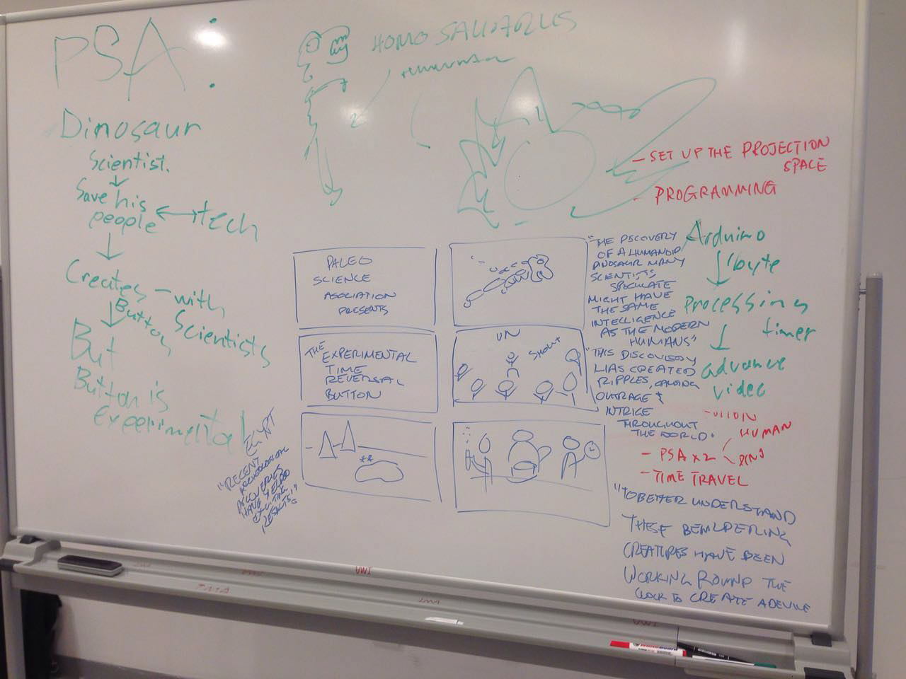
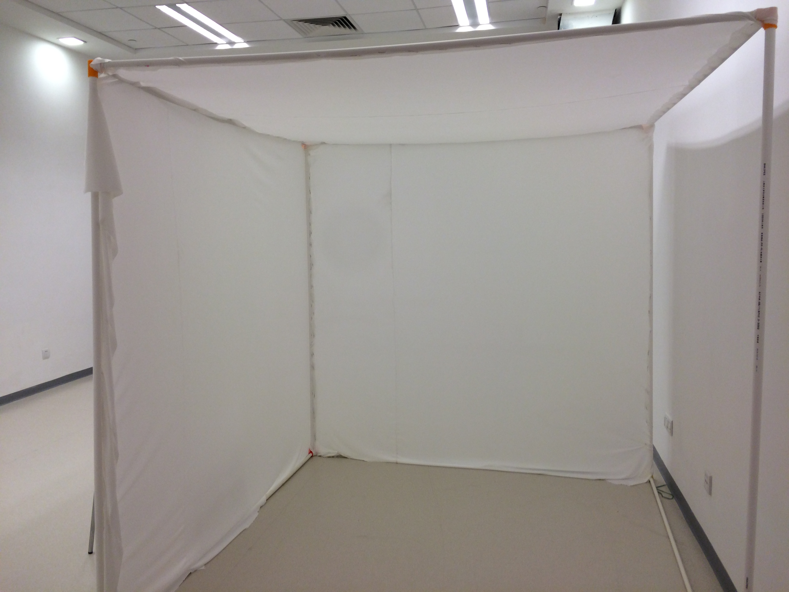
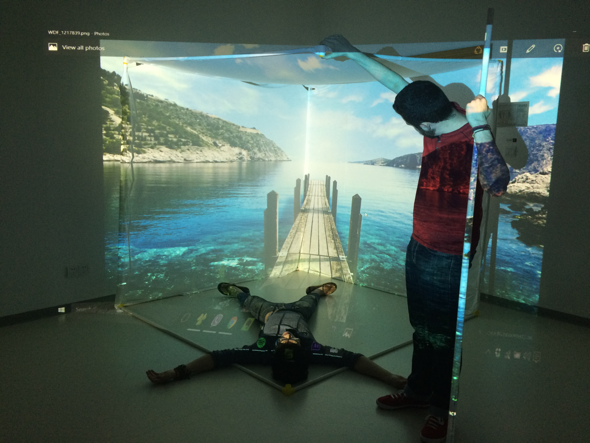
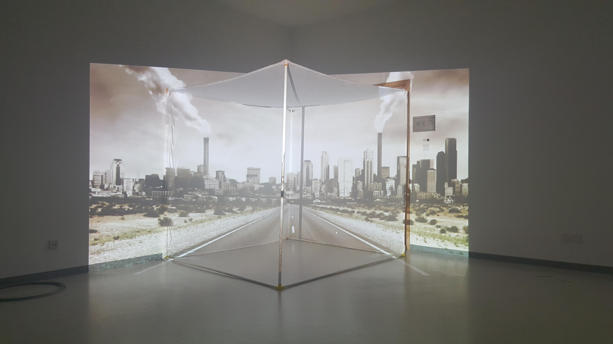
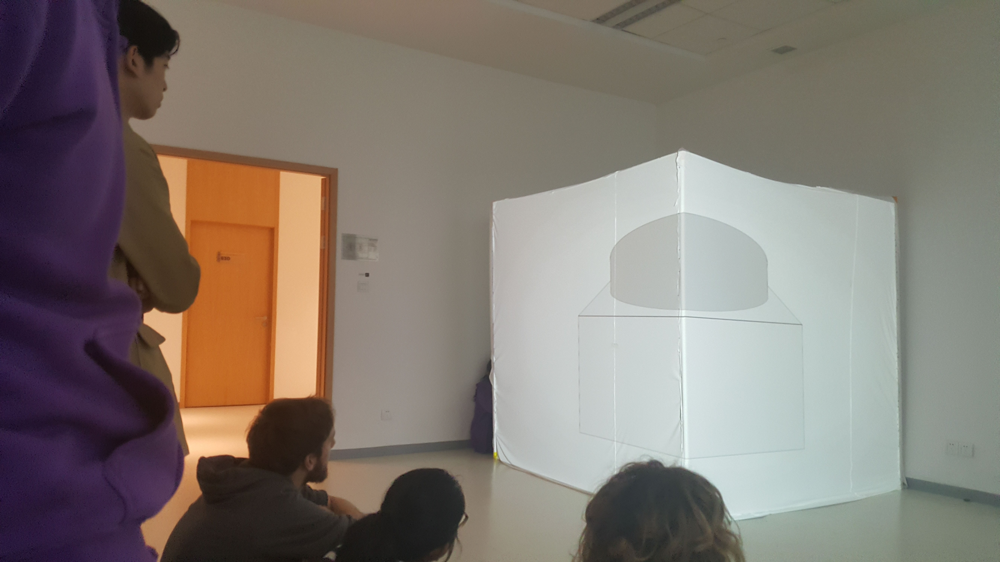
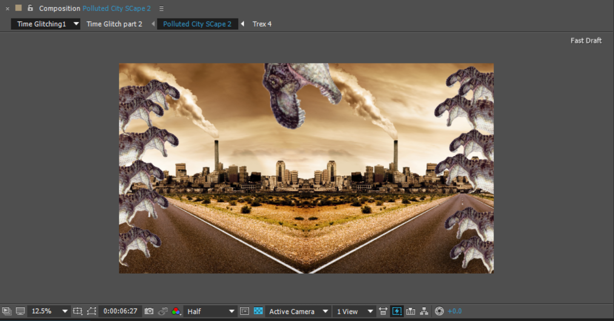
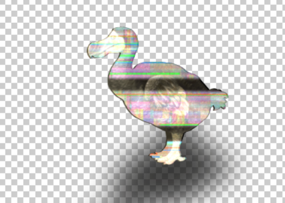
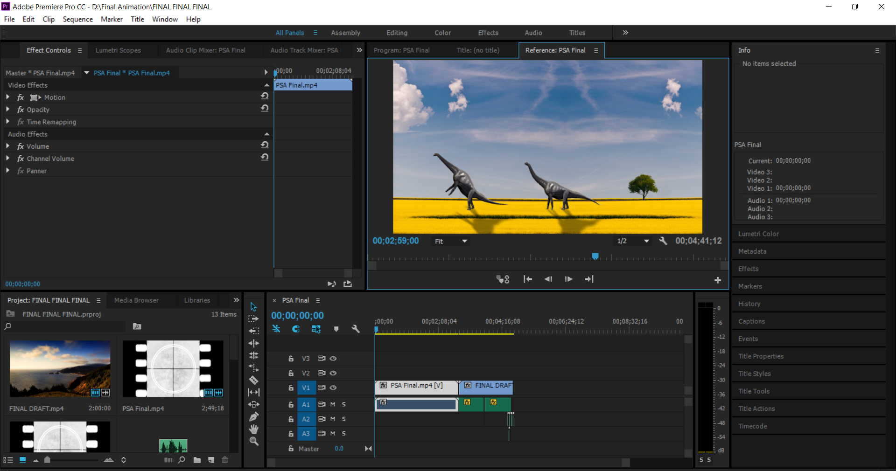
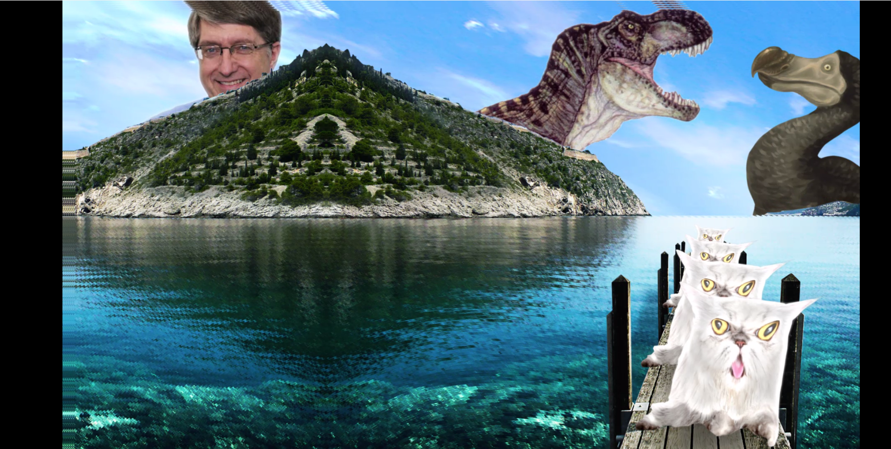
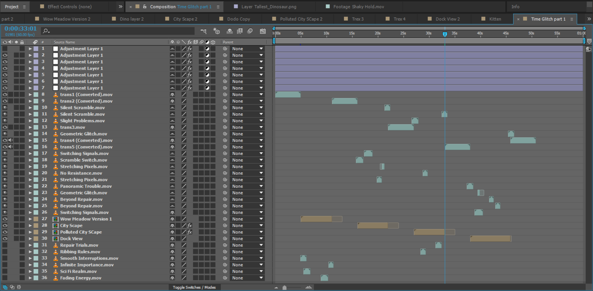

A Glitch Through TIme
Glitching around at the speed of sound...
This was both a big undertaking and an experiment in installation animation. Nicholas Sanchez, Cindy Hu, and I had a lot of ambition going into the project, and we learned a lot about formatting and constructing something that utilized projection-mapped animation in an installation piece. We succeeded in a lot of ways, but also admittedly failed in some ways. But! In failure we learn, and I'll be putting down how to avoid such failures in the future below.
The story goes like this...
A lab has created a device, one that can travel and traverse the fabric of space and time. This device was create in order to study the mysterious humanosaurus. But! Beware, for the power to travel through space and time can yield interesting but unwanted results.
Excuse me, would you like more details? Why yes, yes I would
We needed a way to set up interactivity with the button, and find a way to easily transition interacting with the button to the time glitching sequence. A public service announcement warning about the sheer danger of pressing the button would provide an adequate amount of reverse-psychology which would make the viewer press the button, and then a reason to glitch people through time and space.
As for what originally inspired us, we were heavily inspired by a series of ads that Playstation funded as seen here:
Projection mapping was the name of the game, and we wanted to cover part of a room like in the video in order to create a heavily immersive experience. This however would not be doable, since we didn't have a room that was large enough with walls that were clean enough in order to get the coverage we wanted. We instead opted for a large cube structure, covered in a white spandex fabric.
Nicholas and Cindy were the ones responsible building the structure, and by this point our roles were very clearly defined. Nicholas would be handling the Public Service Announcement in the beginning, Cindy would be handling the time glitching transitions, and I would be handling the projection mapping and the animated environments that the viewer would be going through. I was also responsible for piecing the whole thing together and the final sound effects.
For the environments, I wanted to do an experiment in 2.5D animation, where you get 2D still images, and then cut and layer them in Photoshop so you can get a cool, pseudo 3D (2.5D if you will) image. The video that I drew inspiration from is here:
I then projection mapped these environments onto the cube, which is where we started running into a few problems.
 We quickly figured out that doing a front-projection into the cube would not work at all, shadows would disrupt the experience if people wanted to get close, and it would the render the cube a redundant structure, as we could just use a wall instead to place the projection. So instead we opted for rear projecting onto the cube, so that people would be able to watch it from the outside, and also from inside the cube as well!
After we got the projecting issues out of the way I started to finish up the rest of the assets. I created dinosaurs and other prehistoric creatures to populate the beautiful environments, but I also went a little weird with it, and in retrospect I went way too weird with it.
  That was actually the normal stuff, this is an example of the weird stuff:
Like the fight animation, this one required a lot of chopping and layering and organization of a boat-load of assets.
All this stuff went right, but what went wrong??? The PSA took too long, it could have been chopped down to at least 25% of its original length, maybe even less. We didn't end up finishing the button because of time constraints, and we didn't achieve the level of interactivity that we originally we wanted. People got bored, and left after a bit because of these things, and even though people enjoyed it, not everybody did. Ambition can be a great motivator, but in this case it might have caused us to fail a bit.